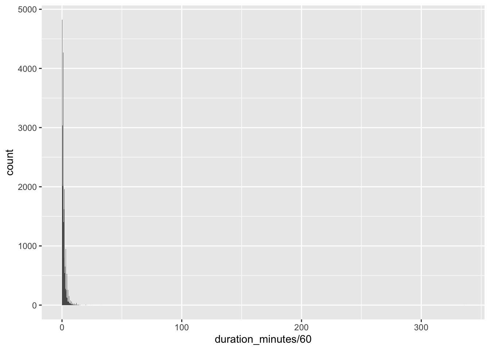
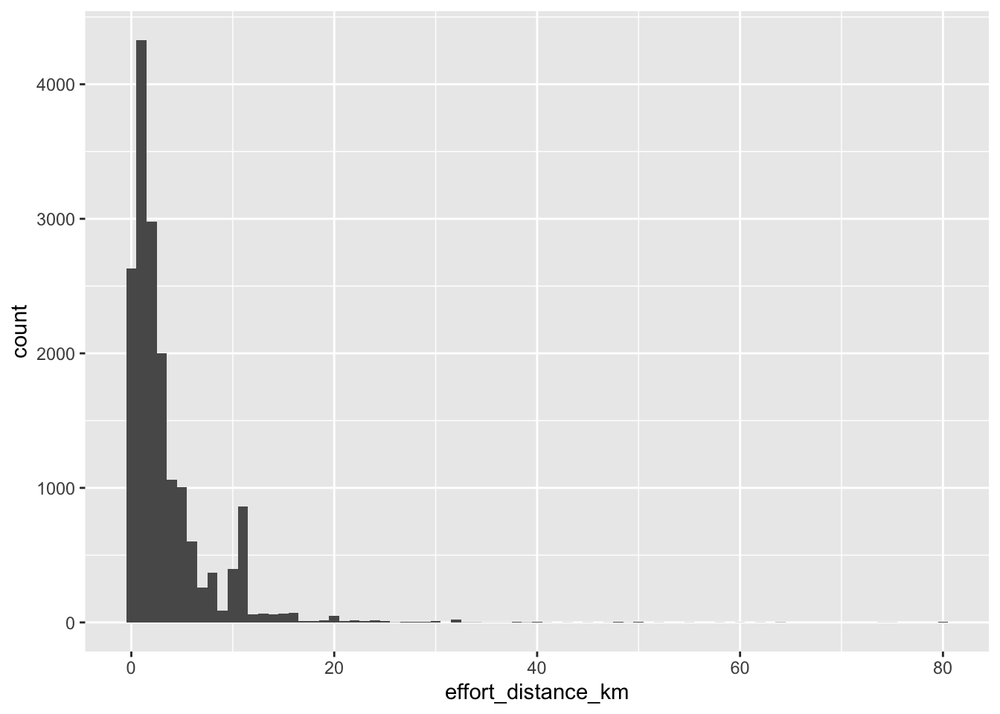
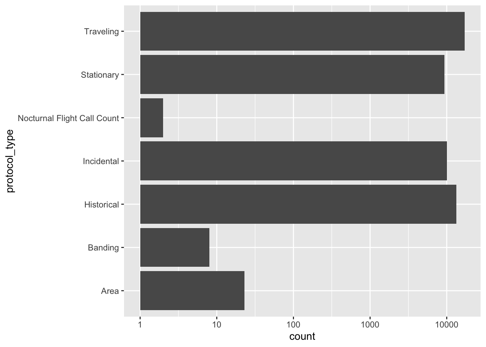
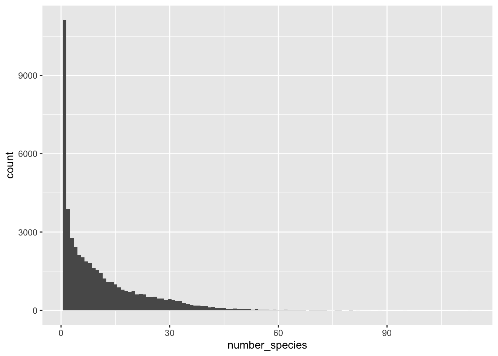
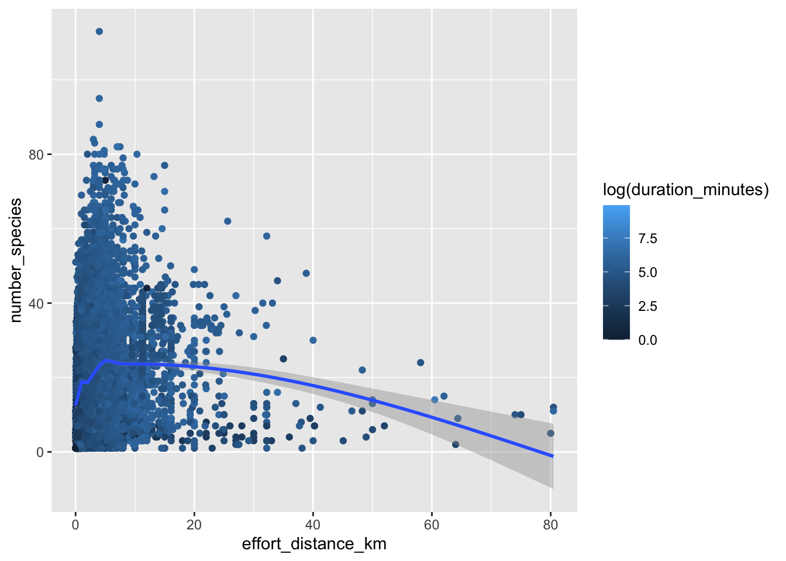
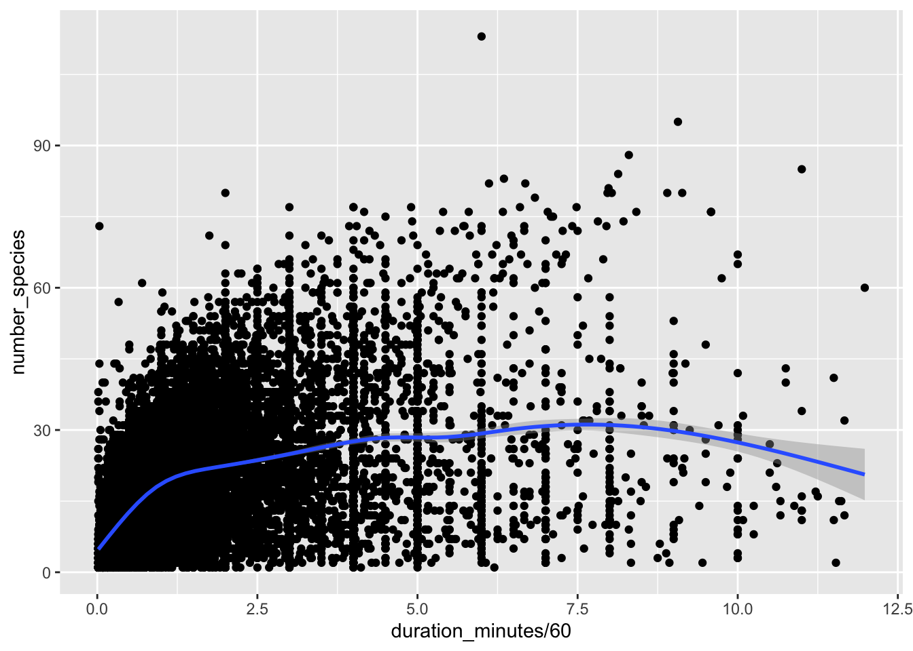
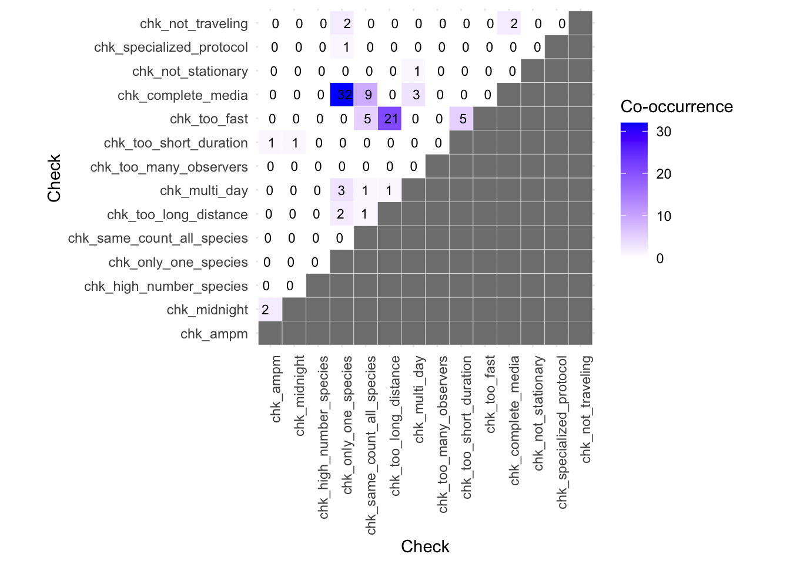

library(tidyverse)
library(auk)
library(DT)
library(ggplot2)
library(writexl)
library(glue)Check eBird Checklist
Introduction
According to the eBird Volunteer Roles and Expectations, eBird checklist reviewers are responsible for tagging eBird Checklists as Public or Not Public, following eBird standards:
Evaluate entire eBird checklists to verify that checklist location, date, protocol, and other details are accurate.
Ensure that distance and duration are not excessively long for the situation and that checklists do not otherwise violate eBird data quality guidelines—holding observers to a uniform standard as outlined in the eBird Central guidelines.
When checklists marked Not Public could be improved and displayed publicly, inform the checklist owner of the necessary changes that would make their list(s) appropriate for public display.
Work with eBird Observation Reviewers and eBird Mentors when checklist-level data quality raises concerns about an observer’s eBird understanding, willingness, or ability to contribute useful data for eBird.
Maintain comprehensive understanding of eBird checklist review policies and follow those standards in the review process.
These responsibilities can be difficult to implement in practice as there is no tool to identify checklists violating eBird data quality guidelines. Below, we propose a series of checks that can be performed to identify these checklists using the eBird Basic Dataset (EBD).
How to review checklists
Detailed explanations on how to review checklists are provided in the eBird Reviewer Handbook:
Checklist-Date Imprecise: Use this when an observer submits records from a correct location, but uses a date that is clearly incorrect. Some users submit lists spanning multiple days. eBird does not accept multi-day lists and it is best to make these checklists Not Public using this reason, even if they are otherwise correct. Obvious list-building efforts should be invalidated as Checklist-List Building and incorrectly plotted locations should be made Not Public using one of the Location review reasons below.
Checklist-Distance Too Long: Mainland checklists of 80.5 km (50.0 miles) or longer, or High Seas checklists (https://ebird.org/region/XX) of 160.9 km (100.0 miles) or longer, are automatically tagged as Checklist-Distance Too Long. Reviewers can override this in rare cases, and if observers correct a typo (e.g., change 50 miles to 5.0 miles) then the checklist can be marked Public by a reviewer; editing the distance does not reverse the automatic tagging.
One goal of review is to ensure that correctly identified records are plotted reasonably accurately, so that display on a map will not misrepresent the species’ range. In general, we believe that most checklists of 8 km (5 miles) or less should be accepted by reviewers and most checklists of 25 km (15 miles) or more should probably be marked Checklist-Distance Too Long, especially if they span multiple habitats. Reviewers must use their best judgment in all cases to not be overly restrictive, but to also steer observers towards shorter and more precise lists.Checklist-Error: This reason is to be used for miscellaneous issues with the checklist that are not covered by the other review reasons (one example would be a checklist reporting entirely captive birds from a zoo). This reason should almost always be accompanied by review notes explaining why the checklist was considered Not Public.
Checklist-List Building: It is common for observers to create a life list or a state list by plotting a location or selecting a random point, picking a random date, and submitting a full list of what they’ve seen over the course of a lifetime or a trip to a given country or state. These do not represent serious attempts to submit data worthy of a scientific database, so these should be made Not Public. Records from these often are easily caught by our filters, and anytime these are identified the entire list should be marked Not Public with this reason. Note that we do formally recommend that users submit such lists using the date of 1 Jan 1900 (see the Enter your pre- eBird life list article) and records from this date are automatically tagged as Checklist-List Building and marked Not Public. If you encounter users entering different dates for such lists, please steer them to this article.
Checklist-Multi-party: eBird is a system for collecting single-party checklists. If two or more observers go birding independently, these birding efforts should be submitted separately. If they are not, it is appropriate to make the list Not Public using this reason if the observer is unwilling to correct his or her list. Christmas Bird Count “sector” data is sometimes submitted this way as an aggregation from multiple independent parties, and this is the appropriate way to address those checklists.
Checklist-Protocol Error: This reason is to be used when eBirders use protocols incorrectly. These could include custom protocols, like atlases or specialized surveys, or misuse of Traveling Count or Stationary count protocols. Also, Nocturnal flight call counts should use the special protocol since this makes assumptions about counts and detectability that do not affect eBird output. Please ask observers to change their Nocturnal Flight Call count submissions to this protocol; if they do not, marking them Not Public using this reason may be appropriate. Changing protocol does not automatically remove this tag, so this requires a reviewer.
Location-Issue: This review reason is to be used for any case where the observer has badly misplotted the location or has selected the incorrect location. Ideally, the reviewer would email the observer in such cases to inform him or her about the error. Note that use of country, state/province, or county-level locations (from “Submit for an entire country, state, county, or city”) will automatically treat checklists as Not Public using the appropriate review reason. For any Location review reason—including both reviewer-tagged checklists and automatically- tagged checklists—a correction of the location by the user (either a location move or selection of a different location) will remove this checklist-level flag. We assume in such cases that the observer has made the appropriate correction and if not, these will need to be located again; we do not give reviewer notification in such cases.
Read EBD database
To perform the checks below, start by downloading the EBD file for your region on eBird.
Note
Downloading the EBD requires to submit a data request.
# file <- "data/ebd_KE_relAug-2022/ebd_KE_relAug-2022.txt"
# file <- "data/ebd_US-AL-101_202204_202204_relApr-2022_SAMPLE/ebd_US-AL-101_202204_202204_relApr-2022.txt"
file <- "data/ebd_CH_smp_relAug-2023/ebd_CH_smp_relAug-2023.txt"Read data with the R auk package.
obs_0 <- read_ebd(file)
Tip
In case this operation takes too much time, an alternative is to split the database on region/subregion or year.
obs_0 <- auk_ebd(file) %>%
# auk_country("Kenya") %>%
# auk_state("KE-300") %>%
# auk_county("KE-300") %>%
auk_year(seq(2010,2020)) %>%
# auk_date(date = c("2020-05-01", "2020-06-30"))
# auk_complete() %>% # Only complete checklists
auk_filter(file = tempfile()) %>%
read_ebd()To find a country, state or county, use the Explore regions search on eBird and use the code in the URL. Alternatively, you can also use the variable ebird_states in the auk package to list all countries and states.
Process database to checklists
Next, build the observation and checklist database.
obs <- obs_0 %>%
mutate(
group_id = checklist_id,
checklist_id = sampling_event_identifier
) %>%
select(c(
"group_id", "checklist_id", "taxonomic_order", "common_name", "observation_count",
"locality", "observation_date", "time_observations_started", "observer_id",
"protocol_type", "duration_minutes", "effort_distance_km", "number_observers",
"all_species_reported", "has_media"))
# Build checklist database
c <- obs %>%
mutate(
observation_count_num = as.numeric(ifelse(observation_count == "X", NA, observation_count))
) %>%
group_by(group_id) %>%
mutate(
number_species = n(),
number_distinct_count = n_distinct(observation_count),
median_count = median(observation_count_num, na.rm = T),
number_media = sum(has_media)
) %>%
ungroup() %>%
select(-c(group_id, taxonomic_order, common_name, observation_count, observation_count_num, has_media)) %>%
unique()
# Modify some columns for ease of use
c <- c %>%
mutate(
observation_date = ymd(observation_date),
time_observations_started = hms(time_observations_started, quiet = T),
checklist_link = paste0("<a href='https://ebird.org/checklist/", str_extract(checklist_id, "^[^,]+"), "' target='_blank'>", checklist_id, "</a>"),
all_species_reported = all_species_reported & protocol_type != "Incidental"
)Explore your data
Here are some figures to get an overview of the checklists meta-data distribution. You might be able to already see some outliers/issues.
c %>% filter(!is.na(duration_minutes)) %>%
ggplot(aes(x=duration_minutes/60)) +
geom_histogram(binwidth=15/60)
c %>% filter(!is.na(effort_distance_km)) %>%
ggplot(aes(x=effort_distance_km)) +
geom_histogram(binwidth=1)
c %>% filter(!is.na(number_observers)) %>%
ggplot(aes(x=number_observers)) +
geom_histogram(binwidth=1)
c %>% filter(!is.na(time_observations_started)) %>%
ggplot(aes(x=as.numeric(time_observations_started, units="hours"))) +
geom_histogram(binwidth = 1)
c %>%
ggplot(aes(y=protocol_type)) +
geom_bar() +
scale_x_log10()
c %>% filter(!is.na(number_species)) %>%
ggplot(aes(x=number_species)) +
geom_histogram(binwidth=1)
c %>% filter(all_species_reported & protocol_type== "Traveling") %>%
ggplot(aes(x=effort_distance_km, y=number_species)) +
geom_point(aes(col=log(duration_minutes))) +
geom_smooth(method="gam", formula = y ~ s(x, bs = "cs"))
c %>% filter(all_species_reported & duration_minutes<12*60) %>%
ggplot(aes(x=duration_minutes/60, y=number_species)) +
geom_point() +
geom_smooth(method="gam", formula = y ~ s(x, bs = "cs"))
Checks
The core idea of this guide is to identify checklists which might have an issue based on a series of checks.
Important
It is essential that you manually adapt the value of the parameters used here to see if they make sense for your reviewing region. You might start with more permissive value at first and then reduce them later to catch more problematic checklists.
chk_ampm(Error): A frequent issue is for the time to be entered as AM instead of PM (i.e., in the middle of the night, rather than in the afternoon).chk_midnight(Error): Starting a checklist at midnight should be quite uncommon, but it’s often used by people to enter day-list or incorrectly add time on a historical/incidental list without time.chk_multi_day(Protocol Error): Checklists that span over two days are not valid.chk_not_traveling(Protocol Error): Traveling checklists of less than 30m should be entered as stationary.chk_not_stationary(Protocol Error): Staionary checklists with more than xx species are most likely traveling checklists.chk_high_number_species(List Building or Date Imprecise): Checklists with an exceptionally high number of species (relative to your region) are generally indicative of multi-day lists or list-building.chk_only_one_species(Protocol Error): A complete checklist with a single species is often indicative of incorrectly checking the “Complete” button.chk_too_long_distance(Distance Too Long): As mentioned in the guidelines, a checklist of more than xx km is susceptible to be distance too long.chk_too_short_duration(Protocol Error): Checklists with a high number of species relative to the duration are suspicious.chk_too_fast(Protocol Error): Catch protocol issues with incoherent duration and distancechk_complete_media(Protocol Error): Checklists marked as complete with a media for each species often tend to rather be “Incomplete” checklists.chk_too_many_observers(Protocol Error): Checklists with more than xx observers are often suspicious.chk_specialized_protocol(Protocol Error): You might want to check the use of non-standard protocols.
chk <- c %>%
mutate(
chk_ampm = (time_observations_started > hm("22:00") | time_observations_started < hm("4:00")) &
(time_observations_started + minutes(duration_minutes) < hm("6:00")) &
number_species > 10,
chk_midnight = time_observations_started == hms("00:00:00"),
chk_high_number_species = number_species>90,
chk_only_one_species = all_species_reported & number_species==1 & duration_minutes > 5,
chk_same_count_all_species = all_species_reported & median_count>0 & number_distinct_count==1 & number_species>2,
chk_too_long_distance = effort_distance_km > 25,
chk_multi_day = time_observations_started + minutes(duration_minutes) > hours(24),
chk_too_many_observers = number_observers > 30,
chk_too_short_duration = all_species_reported & number_species/duration_minutes > 10,
chk_too_fast = effort_distance_km/duration_minutes*60 > 60,
chk_complete_media = all_species_reported & number_media==number_species,
chk_not_stationary = protocol_type == "Stationary" & number_species>50,
chk_specialized_protocol = !(protocol_type %in% c("Historical", "Traveling", "Incidental", "Stationary")),
chk_not_traveling = protocol_type=="Traveling" & effort_distance_km < 0.03
) %>%
mutate(across(starts_with("chk_"), ~replace_na(., FALSE)))Check overview
In the table below you can view the number of checklists flagged for each check.
chk %>%
select(., starts_with("chk_")) %>%
summarise(across(everything(), sum)) %>%
pivot_longer(everything(), names_to = "Check", values_to = "number_checklist") %>%
arrange(desc(number_checklist)) %>%
datatable(options = list( pageLength = 50) )The matrix below highlights the number of checklists flagged by two checks. We want to limit these as far as possible, but some overlap is unavoidable.
df <- chk %>%
select(., starts_with("chk_"))
# Compute the matrix
co_occurrence_matrix <- t(as.matrix(df)) %*% as.matrix(df)
# Hide the lower right part of the matrix (symetric)
diag(co_occurrence_matrix) <- NA
co_occurrence_matrix[lower.tri(co_occurrence_matrix, diag = TRUE)] <- NA
as.data.frame(as.table(co_occurrence_matrix)) %>%
ggplot(aes(x = Var1, y = Var2)) +
geom_tile(aes(fill = Freq), color = "white") +
scale_fill_gradient(low = "white", high = "blue") +
geom_text(aes(label = Freq), position = position_dodge(width = 0.5), vjust = 0.5, hjust = 0.5, size = 3) +
theme_minimal() +
labs(fill = "Co-occurrence", x = "Check", y = "Check") +
coord_fixed() + # ensures the tiles are square
theme(axis.text.x = element_text(angle = 90, hjust = 1))
For each check (edit the check name in the code below), you can also view the checklists flagged by eobserver.
chk %>%
filter(chk_too_long_distance) %>%
# filter(rowSums(select(., starts_with("chk_"))) > 0) %>%
# filter(observer_id=="obsr497615") %>%
group_by(observer_id) %>%
arrange(desc(effort_distance_km)) %>%
summarise(checklist_link = toString(checklist_link), number_checklist = n()) %>%
# arrange(desc(number_checklist)) %>%
datatable(escape = FALSE)Export
To facilitate managing such a high number of checklists and keep track of your review progress, export the checklists as a spreadsheet using the code below.
write_xlsx(chk,"data/export_ebd_checklist_checked.xlsx")Email templates
Below we provide suggested text for emailing users tailored for each check.
Important
The objectives of emailing users is to (1) make them aware of this error and avoid them reproducing such errors in the future and (2) get them to correct their checklist.
template <- list(
a ="
Dear [name],
Thank you for being a part of eBird. To help make sure that eBird can be used for scientific research and conservation, volunteers like me follow up on unusual observations as a part of the eBird data quality process.
",
checklist = "
I am writing about the following checklist(s): {checklists_link}
",
z = "
Could you please check these checklists, and make any potential corrections. Let me know when you're done, so that I can set the checklist as public again.
Thanks in advance,
Raphaël Nussbaumer
",
ampm = "
Your checklist(s) was flagged because it has an unusual start time, with a potential confusion between AM and PM. If no start time is available, the checklist protocol should be <a href=\"https://support.ebird.org/en/support/solutions/articles/48000950859-guide-to-ebird-protocols#anchorHistorical\">historical</a> if birding was your <a href=\"https://support.ebird.org/en/support/solutions/articles/48000967748-birding-as-your-primary-purpose-and-complete-checklists\">primary purpose</a> or <a href=\"https://support.ebird.org/en/support/solutions/articles/48000950859-guide-to-ebird-protocols#anchorIncidental\">incidental</a> if birding was not your primary purpose. In both cases, you can leave the time field empty.
",
ampm_midnight = "
Your checklist(s) was flagged because it is unusual to start a checklist at exactly midnight. If no start time is available, the checklist protocol should be <a href=\"https://support.ebird.org/en/support/solutions/articles/48000950859-guide-to-ebird-protocols#anchorHistorical\">historical</a> if birding was your <a href=\"https://support.ebird.org/en/support/solutions/articles/48000967748-birding-as-your-primary-purpose-and-complete-checklists\">primary purpose</a> or <a href=\"https://support.ebird.org/en/support/solutions/articles/48000950859-guide-to-ebird-protocols#anchorIncidental\">incidental</a> if birding was not your primary purpose. In both cases, you can leave the time field empty.
",
high_number_species = "
Your checklist(s) was flagged because it contains an unusually high number of species. We want to double check with you that the checklist follows <a href=\"https://support.ebird.org/en/support/solutions/articles/48000795623-ebird-rules-and-best-practices\">eBird rules and best practices</a>, in particular:
- Correspond to a single calendar date: checklists should not span multiple
days. <b>Were all species seen/heard from the start time of your checklist up to the duration set in your checklist?</b>
- Correspond to a single map location: birds from different map regions should not be combined on one list. <b>Were all species reported seen/heard within the distance set in your checklist, centered around the location of the checklist?</b>
- Correspond to the <a href=\"https://support.ebird.org/en/support/solutions/articles/48000950859-guide-to-ebird-protocols\">appropriate protocol</a>.
",
too_long_distance = "
Your checklist(s) was flagged because it as an usually high distance. While it is acceptable to make a checklist of up to 80km according to the <a href=\"https://support.ebird.org/en/support/solutions/articles/48000795623-ebird-rules-and-best-practices\">eBird rules and best practices</a>, more precise checklists are more valuable for science. It is therefore recommended to keep Traveling checklists under 8 km and Stationary checklists under 3 hours for your sightings to make the biggest impact for science. Limiting your checklists to less than one hour or 1.5 km provides even more checklist precision! Please do not submit one checklist spanning several locations, especially when those locations were separated by long drives. A good rule of thumb is: every time you get in a car, stop the previous list and start a new list at the next location.
",
only_one_species = "
Your checklist(s) was flagged because it is a complete checklist with only a single species. While this might be correct, we wanted to double check with you that birding was indeed your primary purpose and you recorded all the birds around you to the best of your abilities. (Please refer to the <a href=\"https://support.ebird.org/en/support/solutions/articles/48000967748-birding-as-your-primary-purpose-and-complete-checklistss\">eBird support help page</a> for more information). If not, you can change the protocol to 'Incidental' or mark your list as 'Incomplete'.
",
multi_day = "
Your checklist(s) was flagged because of its unusually high duration. According to the <a href=\"https://support.ebird.org/en/support/solutions/articles/48000795623-ebird-rules-and-best-practices\">eBird rules and best practices</a>, checklists should <b>correspond to a single calendar date and should not span multiple days</b>.
",
complete_media = "
Your checklist(s) was flagged because it is a complete checklist and we suspect that not all birds were reported. While this might be correct, we wanted to double check whether birding was indeed your primary purpose and that you have recorded all the birds around you to the best of your abilities. (Please refer to the <a href=\"https://support.ebird.org/en/support/solutions/articles/48000967748-birding-as-your-primary-purpose-and-complete-checklistss\">eBird support help page</a> for more information). If not, you can change the protocol to 'Incidental' or mark your list as 'Incomplete'.
",
same_count_all_species = "
Your checklist(s) was flagged because all species were recorded with the same count. We wanted to double check with you that these counts are indeed correct (see more on <a href=\"https://support.ebird.org/en/support/solutions/articles/48000838845\">how to count birds with eBird</a>). If you did not count the birds, you can udpate the count to \"X\".
",
not_stationary = "
Your checklist(s) was flagged because we suspect that the stationary protocol might not be adequate. Can you check the <a href=\"https://support.ebird.org/en/support/solutions/articles/48000950859-guide-to-ebird-protocols#anchorStationary\">guide to eBird protocol</a> and adjust the protocol if necessary? If you're unable to estimate the distance covered, the Historical protocol would be a good choice.
",
not_traveling = "
Your checklist(s) was flagged because it has a traveling protocol with a distance smaller than 30m. According to <a href=\"https://support.ebird.org/en/support/solutions/articles/48000950859-guide-to-ebird-protocols#anchorTraveling\">the guide to eBird protocols</a>, checklists with a distance smaller than 30m should be set as Stationary.
",
too_fast = "
Your checklist(s) was flagged because we suspect a potential issue with the distance and duration entered. Could you double check the values entered and verify the validity of the protocol selected according to the <a href=\"https://support.ebird.org/en/support/solutions/articles/48000795623-ebird-rules-and-best-practices\">eBird rules and best practices</a>?
",
too_short_duration = "
Your checklist(s) was flagged because we suspect a potential issue with the duration entered. Could you double check the value entered and verify the validity of the protocol selected according to the <a href=\"https://support.ebird.org/en/support/solutions/articles/48000795623-ebird-rules-and-best-practices\">eBird rules and best practices</a>?
",
too_many_observers = "
Your checklist(s) was flagged because of the high number of observers. Maybe there is an error in this number?
",
specialized_protocol = "
Your checklist(s) was flagged because it uses a specialized protocol. Please make sure the use of the protocol is appropriate according to <a href=\"https://support.ebird.org/en/support/solutions/articles/48000950859-guide-to-ebird-protocols#anchorSpecialized\">eBird guide to protocols</a>."
)Email per check
chk_names <- chk %>% select(starts_with("chk_")) %>% names()
for (chk_i in chk_names){
email <- chk %>%
filter(!!sym(chk_i)) %>%
group_by(observer_id) %>%
summarise(checklists_link = paste(checklist_link, collapse = ", "), number_checklist = n()) %>%
arrange(desc(number_checklist)) %>%
glue_data(paste0(template$a, template$checklist, template[[gsub("chk_", "",chk_i)]], template$z), .sep = "\n----\n")
fileConn<-file(paste0("email/", gsub("chk_", "",chk_i), ".txt"))
writeLines(email, fileConn)
close(fileConn)
}Combined
observer <- chk_combined <- chk %>%
filter(rowSums(select(., starts_with("chk_"))) > 0) %>%
group_by(observer_id) %>%
arrange(desc(n())) %>%
pull(observer_id) %>%
unique()
email <- ""
chk_names <- chk %>% select(starts_with("chk_"), -c(chk_midnight, chk_ampm) ) %>% names()
for (obs_i in observer){
chk_obs <- chk %>%
filter(observer_id == obs_i)
email <- paste0(email, template$a , "We performed some automatic checks and the following checklists were identified as having potential issues with protocols. We detail below for each of them what might be incorrect and how to fix them.
\n")
for (chk_i in chk_names){
checklist_link <- chk_obs %>%
filter(!!sym(chk_i)) %>%
pull(checklist_link) %>%
paste(collapse = ", ")
if (checklist_link != ""){
email <- paste0(email,
"<b>", gsub("\\b([a-z])", "\\U\\1", gsub("_", " ", gsub("chk_", "",chk_i)), perl=TRUE) , "</b>: ",
checklist_link,
template[[gsub("chk_", "",chk_i)]],
"\n")
}
}
email <- paste0(email, "\nBest wishes,\n----\n")
}
fileConn<-file(paste0("email/combined_per_observer.txt"))
writeLines(email, fileConn)
close(fileConn)